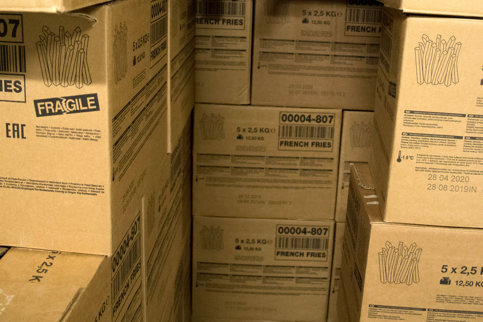
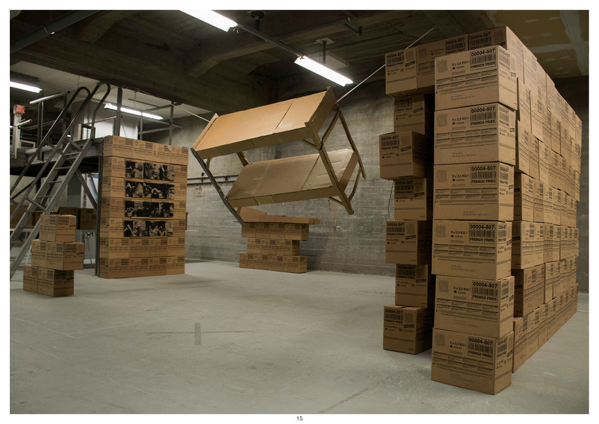
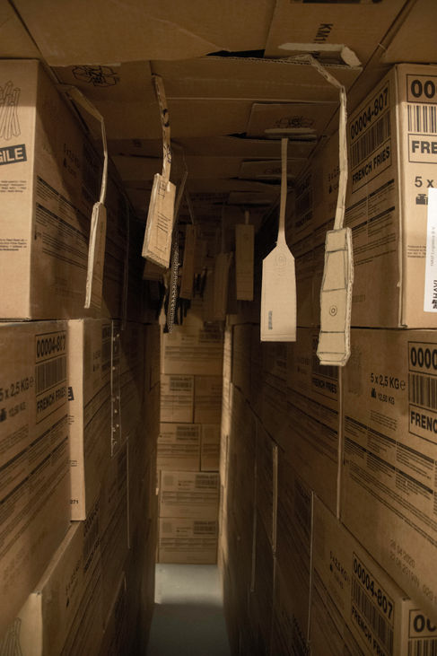
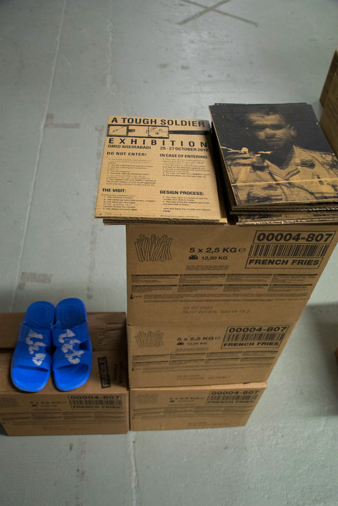
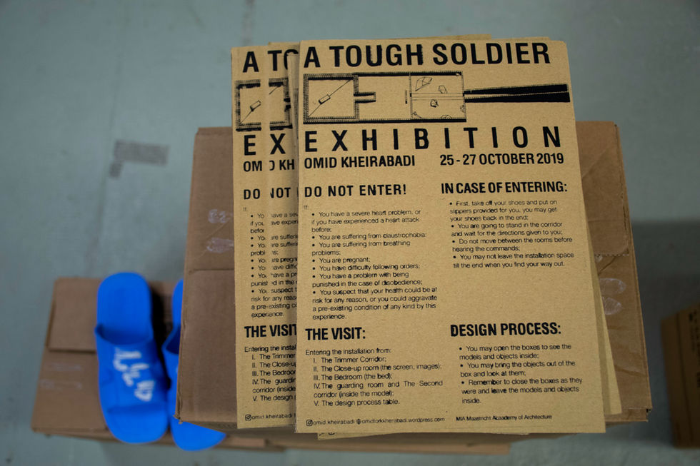

a tough soldier
In the installation titled "A Tough Soldier" (2019), Omid delved into the striking parallels between two oppressive systems. He examined the uniforms and objects that define our daily experiences, juxtaposing a uniform from the Iranian Army Forces with one from McDonald's in Maastricht, where he worked at the time. The repetitive nature of low-wage labor, common to both systems, became more palpable as it took shape through an architectural form crafted from McDonald's fries boxes.
Cardboard, as the tangible representation of fast food products encased in paper, served as a medium to give form to the mental spaces shaped by Omid's memories and traumas as an ex-soldier. The process of creating this work, involving the collection and handling of numerous cardboard boxes, evolved into a meditative action. Through this artistic journey, Omid sought to better understand himself and his place in a "superimposed space" that encompassed these two contrasting realities.
5 images from the archive



